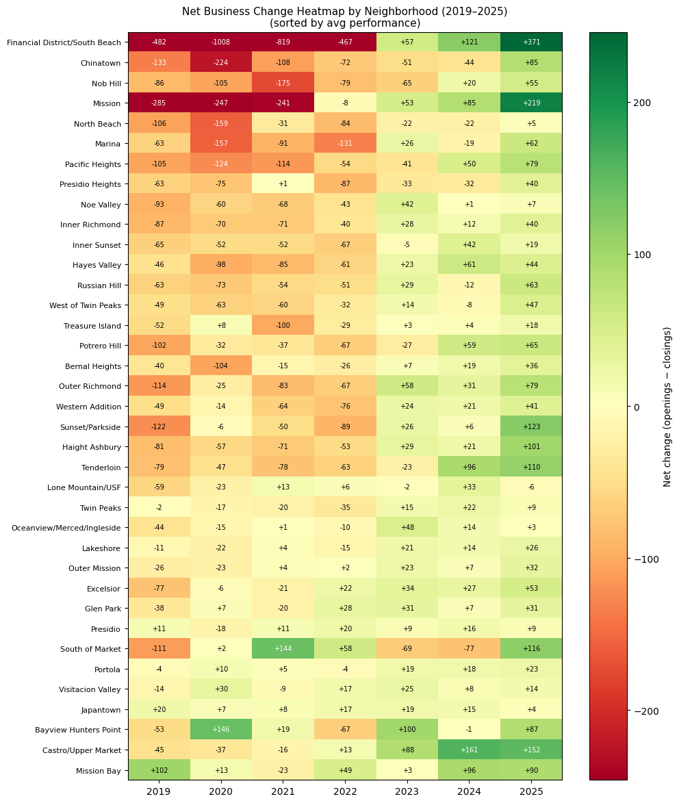
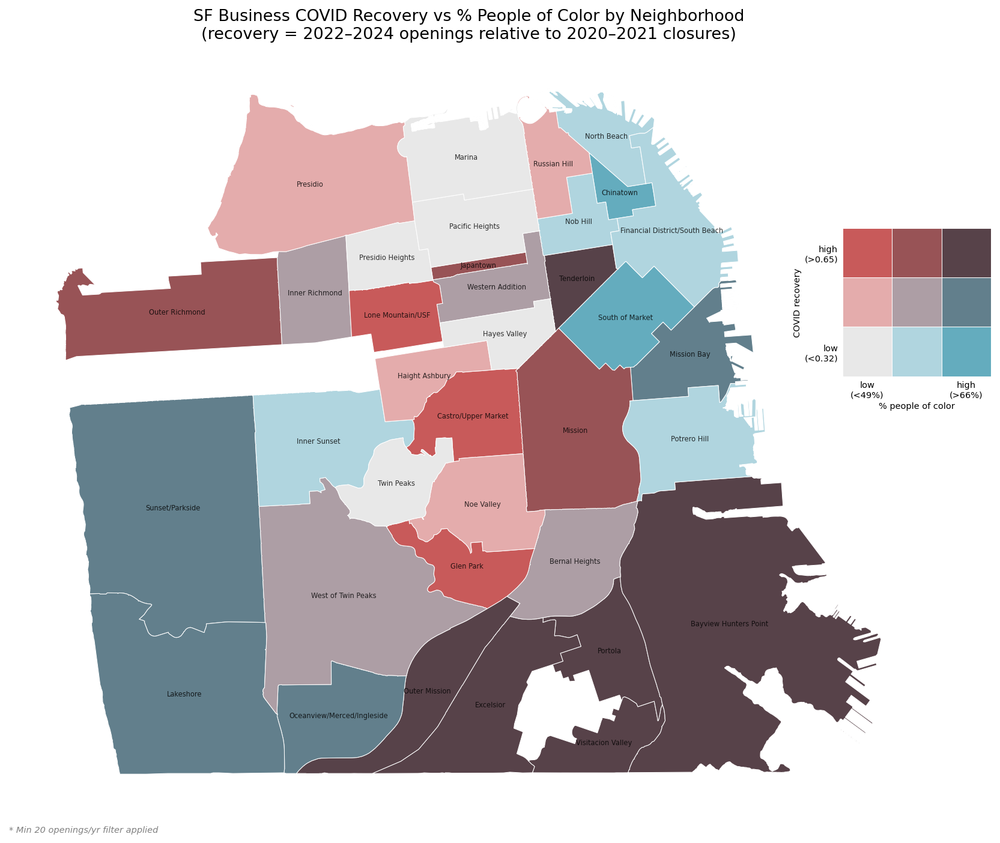
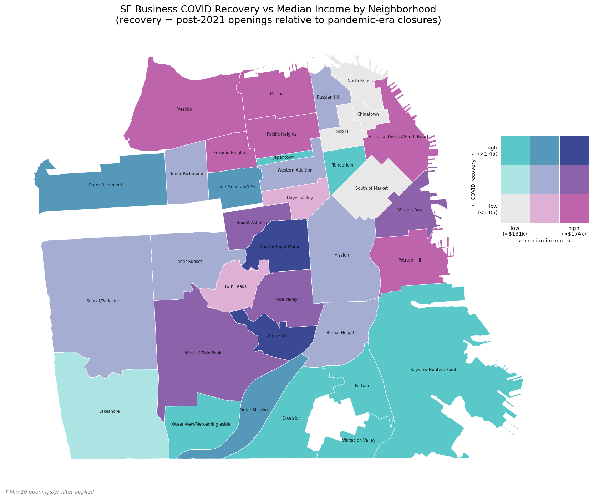
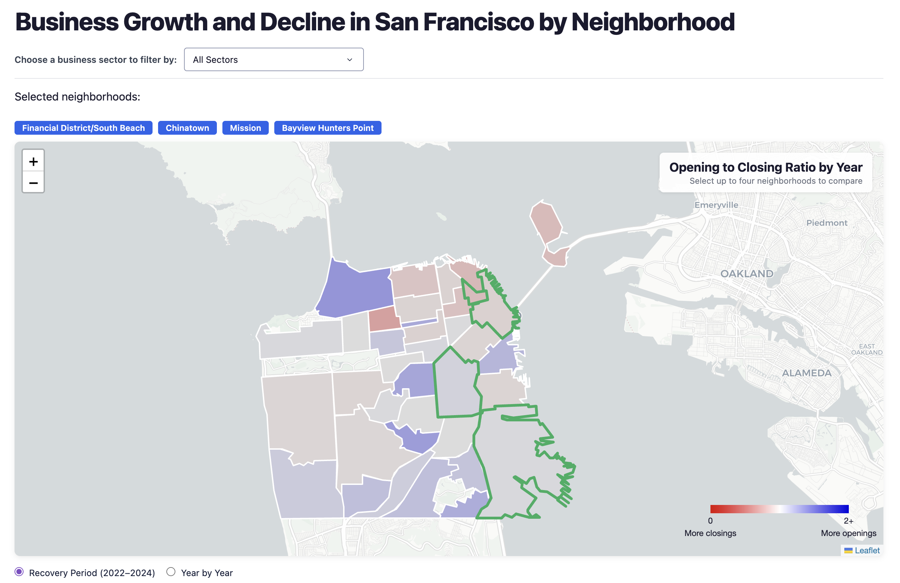
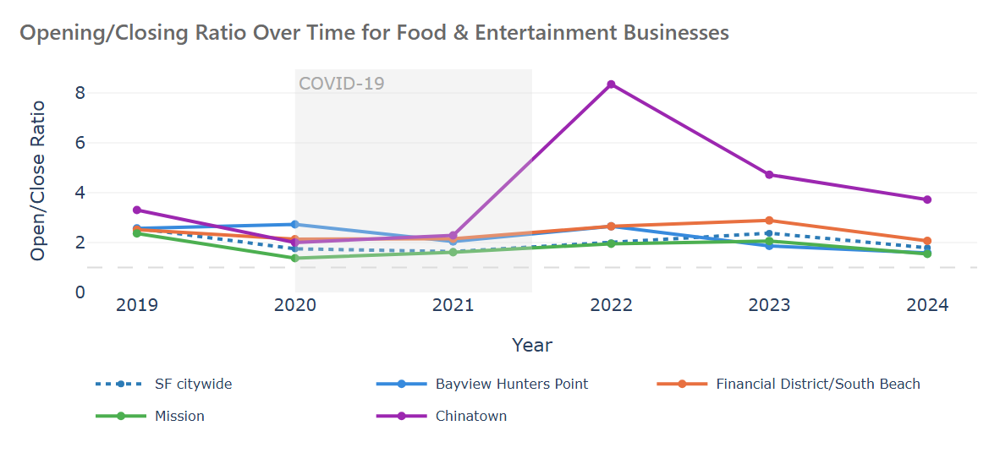
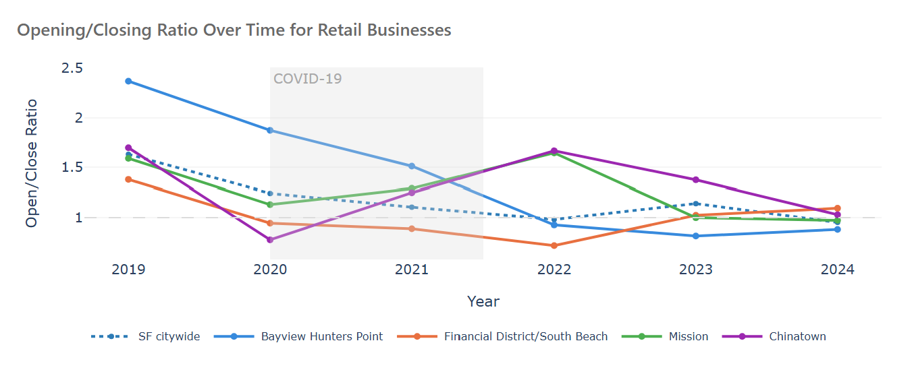

Introduction
Background and Motivation
The City of San Francisco's commercial districts faced severe disruption during the COVID-19 pandemic. The pandemic created the largest disruption to the social and economic health of downtown since the 1906 and 1989 earthquakes (SPUR, 2024). While much has been written about the economic recovery of the City, few have discussed the spatial equity implications of the loss of local businesses and the lack of access to particular kinds of stores. The geography of that disruption has also been uneven. The Financial District experienced the highest losses, accounting for nearly 20% of citywide business closures (Bay Area Council Economic Institute & CBRE, 2023).
This collapse in downtown commercial activity reflects a broader structural shift, with remote and hybrid work cultures reducing the daily population of office workers that had been the lifeblood of small businesses in dense commercial corridors (SF Standard, 2023). At the same time, business activity in residential-serving neighborhoods remained comparatively strong throughout the recovery period (Bay Area Council Economic Institute & CBRE, 2023).
Beyond the economic implications, the loss of job growth and city tax revenue, small, local, independent businesses in the City serve as cultural and community hubs, supporting the social fabric and daily life of diverse communities across the city (SPUR, 2024). Their loss can reshape neighborhood life, reduce access to goods and services, and accelerate broader processes of disinvestment and displacement.
This project draws on business registration data from 2019 to 2025 to track openings, closures, and net change at the neighborhood level across San Francisco. We calculate the ratio of openings to closings and examine how growth and decline vary by neighborhood demographics, specifically median household income and racial composition. We also analyze trends by business sector to understand which types of businesses were most vulnerable and which have recovered most strongly.
To make these neighborhood and sectoral patterns explorable, we developed an interactive tool that allows users to examine business change across San Francisco over time and by industry (along with neighborhood-specific demographic data). The tool is intended to support neighborhood-level comparison by linking an interactive map with charts showing business open/close ratios across different sectors.
Research Question
Overarching Question: How have the rates of openings, closures, and net change of San Francisco businesses varied across neighborhoods and business types pre- and post-pandemic (2019-2025), and to what extent do these patterns reflect spatial inequities along lines of race and income?
More specifically, we are focusing this analysis on:
- Which neighborhoods experienced the highest closure rates during 2020–2021, and which show the strongest recovery from 2022–2025? Is a neighborhood's business resilience associated with median household income or race, and do these demographic patterns hold when tracking net business change over time?
- Which types of businesses were most disrupted by the pandemic, and did that disruption reveal spatial patterns across City neighborhoods? Across business sectors (see table in Methods), which experienced the highest closure rates during 2020–2021 and the strongest recovery afterward?
Definitions
Outlined below are common terms used in this report to describe patterns in business change, as well as key metrics and tools used in the analysis:
Administrative closure: A business marked as closed by the city because it stopped filing paperwork or responding to the Treasurer & Tax Collector’s Office, even if the actual closure may have happened earlier.
Business recovery: Measured by the number of new businesses opening compared to the number that closed. In this project, recovery often refers to how strongly a neighborhood rebounded after 2020–2021.
Business resilience: A neighborhood or business sector’s ability to withstand disruption and avoid large losses during the pandemic. Areas with fewer closures or quicker rebounds are considered more resilient.
Business vitality: The overall strength and activity of a neighborhood’s business environment. This can include high levels of openings, steady growth, active commercial corridors, and lower levels of long-term vacancy or decline.
Commercial corridor: A street or area where businesses are concentrated, often including restaurants, retail stores, and services.
NAICS code: A standardized business classification system (North American Industry Classification System) used to group businesses into sectors.
Neighborhood-serving businesses: Businesses that mainly serve local residents rather than commuters or tourists.
Net business change: The total change in the number of businesses after subtracting closures from openings.
Open/close ratio (opening-to-closing ratio): A measure comparing the number of business openings to closures in a given year or area (ratio above 1.0 = more businesses opened than closed; ratio below 1.0 = more businesses closed than opened).
Broader Impact
Understanding the geography of business resilience has direct implications for equitable economic recovery policy. San Francisco’s downtown business struggles and the relative strength of residential neighborhood corridors suggest that recovery is not just about time, but also business type, proximity to residential populations, and access to institutional support (SF Standard, 2023).
If neighborhoods with lower incomes or higher shares of residents who are people of color experienced deeper losses and slower recovery, it reveals structural disparities in access to economic development that merit policy intervention and attention. Findings from this analysis could help city agencies, community development organizations, and funding sources identify which neighborhoods and business types could most benefit from support and intervention such as grants, technical assistance, and commercial corridor revitalization programs.
By mapping business recovery against their demographic context, this work also provides information for directing resources toward communities that bear a disproportionate share of the pandemic's commercial disruption.
Methods
This project relies on San Francisco Registered Business Location data, analyzing data in Python using pandas, geopandas, and a number of plotting libraries in Google Colab and VS Code. The project involved cleaning and organizing the raw business registration data, matching businesses to neighborhoods across San Francisco, grouping them into larger industry categories, and then using that data to map and compare patterns of business loss and recovery across the city.
Data Sources
The following table describes the data sources used for this analysis.
|
Dataset |
Coverage |
Granularity |
Type |
Format |
Source |
Relevance |
|
Registered Business Locations |
All businesses registered within the City and County of San Francisco; temporal coverage 1849–2026 (businesses closed before 2014 have been removed) |
Spatial: point-level (street addresses with coordinates). Temporal: updated daily as license changes are filed |
Numeric and string/categorical (coordinates, addresses, NAICS code, business name, license dates) |
Tabular (CSV) |
SF Open Data Portal: Office of the Treasurer & Tax Collector |
Primary dataset for the analysis: provides the openings, closings, and sector-level business activity that drive every chart and metric in this report |
|
Map of 2020 Census Tracts Assigned to Analysis Neighborhoods |
All 2020 Census tracts within San Francisco, mapped to the city's 41 analysis neighborhoods |
Spatial: census tract neighborhood crosswalk. Temporal: static (2020 Census vintage) |
Geometric (polygon) with categorical neighborhood labels |
GeoJSON / Shapefile |
SF Open Data Portal: DataSF |
Crosswalk used to aggregate Census ACS demographic variables from tract-level estimates up to the neighborhood level for the bivariate maps |
|
Analysis Neighborhoods |
The 41 official analysis neighborhoods covering the City and County of San Francisco |
Spatial: neighborhood polygons constructed by grouping 2010 Census tracts. Temporal: static |
Geometric (polygon) with neighborhood name attributes |
GeoJSON / Shapefile |
SF Open Data Portal |
Defines the geographic units used throughout the report; provides the boundary geometries for the choropleth maps and the neighborhood-level business aggregations |
|
American Community Survey (ACS) 5-Year Estimates, 2019–2023 |
All census tracts within San Francisco County (state 06, county 075); national survey conducted continuously by the U.S. Census Bureau |
Spatial: census tract. Temporal: 5-year rolling average (2019–2023 vintage) |
Numeric estimates (population counts, race/ethnicity, median household income) |
Tabular, accessed via the Census API |
U.S. Census Bureau: ACS |
Source for neighborhood-level demographic variables used in the bivariate choropleth maps and resilience analysis: median household income (Table B19013) and percent people of color ( from Table B03002) |
Data Cleaning
The first step was cleaning the business registration data. We standardized the column names, then business start and end dates were standardized into datetime fields, and records based outside San Francisco and without usable latitude or longitude coordinates were removed. The "Business Location" column was converted into a geometry column using EPSG:4326. We checked for duplicate business IDs and businesses missing a start date, but did not find any anomalies. We exported the file to ALL_openings_closings.parquet.
We refined our time period to 2019-2025 because data before 2018 was unreliable due to administrative closures (see Limitations). Starting in 2019 also provided a clean pre-pandemic baseline year. To define our study population, we sorted by all cases where the location end date occurred in 2019 or prior, to be sure that we are not carrying businesses that closed prior to our study period, while ensuring that businesses opened prior to 2019 remain in the dataset. We then separated opening and closing events, giving each a "year" column for the event and restricting the time period of each to 2019–2025.
For the purposes of the analysis, openings were defined as businesses with a location_start_date in a given year, while closures were defined using the location_end_date. We used location dates rather than business registration dates because a single business can operate multiple locations, and location dates more accurately reflect physical commercial activity on the ground.
Spatial Unit of Analysis
For our core spatial analysis, we joined the business point data to San Francisco Analysis Neighborhood geographies, grouped by neighborhood and year, and exported as ALL_openings_closings_by_neighs_year.parquet. We acknowledge the Modifiable Areal Unit Problem (MAUP): patterns observed at the neighborhood level may not hold at finer or coarser scales. Our findings generally stay consistent across different geographic scales, likely because of the clustered nature of business activity around commercial corridors, which tend to correspond with neighborhood geographies. When more granular units are used, such as block groups or hex plots, the commercial corridors are revealed more clearly, but the findings remain consistent. To align with a geography that is familiar to users and a planning context, we primarily use the neighborhood level.
Sector Classifications
For sector-specific analysis, we first established categories of NAICS and SF Business License (LIC) codes based on Meltzer's (2016) NAICS groupings in her analysis of gentrification and small business activity in New York. Over 1,500 businesses contained an LIC code without a NAICS code. Rather than dropping these records, these businesses were sorted into the existing NAICS categories based on their license code description, provided in another column. For instance, "RETAIL MKTS W/O PREP (UNDER 5,001)" was sorted into Retail.
One challenge in sorting NAICS codes into NAICS groups is that some businesses contain multiple codes, such as a retail shop that hosts live events, or a manufacturer that sells direct from the store. To handle such cases, NAICS codes were split into individual strings, then exploded and each assigned a NAICS group. By design, some businesses appear multiple times in the sector-by-sector analysis if they belong to multiple groups.
|
Sector group |
Includes |
NAICS codes |
|
Retail |
Retail stores, shops, and markets |
4400–4599 4500–4599 |
|
Business & professional services |
Information, finance, insurance, real estate, professional, and administrative services |
5100–5199 5210–5239 5240–5249 5300–5399 5400–5499 5500–5599 5600–5699 |
|
Food & entertainment |
Restaurants, bars, hotels, arts, and recreation venues |
7100–7199 7200–7299 |
|
Personal services |
Laundry, massage, pet care, tattoo, parking, and other consumer services |
8100–8139 |
|
Education & health |
Private schools, colleges, hospitals, clinics, and social services |
6100–6299 |
|
Manufacturing & industrial |
Manufacturing, wholesale trade, transportation, warehousing, and vehicle repair |
3100–3399 4200–4299 4800–4999 |
|
Utilities & construction |
Utilities infrastructure, construction, hazmat permits, and cannabis operations |
2200–2299 2300–2399 |
The dataframe was then grouped by neighborhood, NAICS group and year, resulting in a dataframe of 3,056 rows, one for each unique neighborhood, group and year combination, and exported to ALL_openings_closings_by_naics_neighs_year.parquet.
We retained "No Code" as a separate category rather than excluding these businesses entirely. Scanning the No Code businesses by hand, many appear to be registered by individuals, potentially indicating a high proportion of freelancers. Using the Counter library to scan for similarities in the "Doing Business As" column, we found that the most frequent words were "services," "design," "consulting," "group," and "apts," suggesting that freelance consultants, designers, and landlords or real estate firms are among the most represented in the No Code category. When first exploring this data, we sorted these businesses out, given that they are less likely to represent pieces of the built environment that residents interact with. But as our question shifted toward economic recovery, we chose to include these businesses as legitimate expressions of SF's economy. We also excluded 2025 from all industry-specific analysis because only 30.7% of 2025 businesses had a NAICS or LIC code assigned at the time of the data pull, compared to 60–80% in prior years, making 2025 sector counts unreliable.
Measuring Recovery
After assigning businesses to neighborhoods, yearly opening and closure counts were calculated for each neighborhood. From there, net business change was calculated as openings minus closings. We also calculated opening-to-closing ratios as a way to compare recovery across neighborhoods and business sectors. These ratios are one of the most useful ways to compare neighborhoods because they indicate business activity relative to the amount of business turnover already happening in an area.
Demographic Analysis
For the interactive tool and bivariate maps, we also incorporated demographic variables pulled from American Community Survey 5-year estimates for 2019–2023. These estimates did not require significant processing, but column names were standardized and percentages calculated for the share of the population. Official San Francisco Analysis Neighborhoods are built out of SF census tracts, and SF OpenData provides a tract-to-neighborhood crosswalk with neighborhood geometry included. Population columns were summed across tracts and median neighborhood incomes were calculated using weighted averages based on the population in each tract, per ACS guidelines. For citywide demographics, ACS estimates were pulled directly at the city level. The two dataframes were exported to demographics_by_neighs.parquet and demographics_sf_city.parquet.
Spatial Visualizations
The project uses a variety of spatial visualizations to look at business change across San Francisco. At the neighborhood level, choropleth maps were used to show annual net business change and recovery patterns over time. Bivariate maps were then created to compare business recovery against demographic variables such as median household income and the percentage of residents who are people of color.
The project also includes hex-grid density maps for selected case study areas: the Financial District and Bayview Hunters Point. Business opening and closure points were clipped to neighborhood boundaries and aggregated into projected hexagonal grids. The hex maps are animated by year and separated by openings and closings, allowing users to see a more granular spatial distribution of change. Compared to neighborhood summaries, these maps reveal much clearer commercial corridors and localized clusters of recovery or decline.
Interactive Tool
Further data processing and filtering was done specifically for the app itself in the app_cleaning.py file. It filters to 2019–2024, computes open/close ratios for both the neighborhood-year and NAICS breakdowns, drops low-activity neighborhoods with fewer than 500 total openings and closings from 2020–2024 to avoid misleading ratios in low-activity areas, simplifies the neighborhood geometries for faster map rendering, computes per-sector recovery ratios, and sets axis bounds for the survival scatter chart. Everything is written out to data/processed/app/ for the final app-ready parquets.
The app was built using Dash, an open-source Python framework that packages JavaScript tools together, built on top of Plotly.js and React. The app is deployed on a Render server, which allows us to embed it within this HTML page. The app loads pre-processed dataframes and geodataframes, which are used in a series of callback functions that are called whenever users interact with a piece of the interface. The HTML is built within the Python application itself, and light CSS and JavaScript styling is applied both inline and through a separate custom.css file.
Results
Overall Findings
San Francisco's business decline did not begin with COVID-19. As shown in Figure 1, closings were higher than openings in 2019, with nearly 18,000 closures against roughly 15,000 openings, suggesting that business vitality challenges already existed before the pandemic.
The COVID-19 shock accelerated these trends, with downtown corridors experiencing the most significant losses as remote work reduced demand for office-worker commercial activity. Recovery has been uneven: while many neighborhoods returned to net positive change by 2022, established corridors including Chinatown, the Mission, Nob Hill, and North Beach continued to experience net business loss through 2024. The Financial District showed some improvement in 2023–24 but remains below pre-pandemic levels. Greater resilience is evident in larger residential growth areas such as Castro, Bayview Hunters Point, Mission Bay, and Japantown, where a stronger local-serving business base appears less dependent on office worker demand.
Our findings have important implications for transit agencies that serve San Francisco, as the outlying areas may be increasingly important for regional connectivity than the downtown core, which is what BART, and to a lesser extent Muni, are currently built to serve.
At the sector level, Food & Entertainment demonstrated the strongest recovery, with the highest open-to-close ratios citywide. Manufacturing & Industrial has remained below 1.0 in nearly all neighborhoods since 2020. Retail and Professional/Business Services improved slightly post-Pandemic, but continued to record more closings than openings through 2024, consistent with the sustained shift toward remote work in high-density employment centers.
Detailed Analysis
This section presents eight visualizations exploring San Francisco's post-COVID business landscape across different scales and dimensions. Figure 1 provides a citywide overview of business openings and closings from 2019 to 2025. Figure 2 disaggregates these trends to the neighborhood level through a heatmap of net business change over time. Figures 3 and 4 zoom further in, using hex plots to compare business density patterns in two contrasting neighborhoods, the Financial District and Bayview Hunters Point, at the corridor and block level. Figures 5 and 6 examine whether demographic variables predict post-COVID recovery, using bivariate choropleths to map recovery against percent People of Color and median household income, respectively. Figure 7 breaks down business trends by sector, showing how different industry types fared across the recovery period. Finally, the Interactive SF Business Explorer allows users to filter and explore all of these dimensions simultaneously by neighborhood and business sector.
Figure 1: San Francisco Business Openings and Closings (2019-2025)
As shown in Figure 1, both business openings and closings declined steadily from 2019 to 2025, but closings fell at a faster rate, resulting in the two lines converging by 2023 and openings eventually exceeding closings through 2024–2025. Openings have also declined and remain well below 2019 levels, suggesting that new business formation has not rebounded to pre-pandemic or pre-decline levels.
Figure 1. San Francisco business openings and closings by location registration year, 2019–2025. Counts reflect SF Business Registry records for locations within San Francisco city boundary. Source: SF Open Data Portal, Registered Business Locations dataset. Note that 2025 closings are likely undercounted because of a registration lag.
Figure 2: Net Business Change Heatmap by Neighborhood (2019-2025)
Figure 2 shows net business change for San Francisco neighborhoods from 2019-2025, sorted by average business performance over the period. Overall, nearly every neighborhood shows a red band of losses from 2019 through 2022, and then flips to yellow/green (net business gain) in 2023-2025. However, this recovery by neighborhood is uneven in magnitude, with some neighborhoods experiencing only marginal overall business loss during COVID (e.g., Japantown, Bayview Hunters Point, Mission Bay).
Within this broader pattern, a few notable findings stand out. The first is the scale of loss in the Financial District/South Beach neighborhood (1,008 net businesses lost in 2020 alone), with almost 2,200 businesses lost across the full period. Following this is Chinatown, with total losses around 550, and neighborhoods such as Nob Hill, North Beach, and the Marina have not returned to pre-COVID levels. The Mission also had high business loss before and during the Pandemic (-285 in 2019, -247 in 2020, -241 in 2021), but then one of the strongest recoveries of any larger neighborhood (+219 in 2025). The Castro followed a similar pattern, with minor losses from 2019-2021 and then some of the highest gains of any neighborhood (up to +152 in 2025).

Figure 2. Net business change (openings − closings) by neighborhood and year, 2019–2025. Source: SF Registered Business Locations (DataSF), spatially joined to SF Analysis Neighborhoods. Color scale stopped at +/- 200 to preserve resolution across most neighborhoods; values for Financial District/South Beach extend beyond this range. Sorted by average annual net change.
Overall, Figure 2 shows that the spatial distribution of pandemic disruption and recovery is not uniform across the City. Neighborhoods that are more dependent on daily workers and tourism appeared to experience the highest losses during the Pandemic (e.g., Financial District, Chinatown, Marina), while neighborhoods that serve a more residential/local customer base seemed to rebound more strongly (e.g., Castro, Mission, Sunset/Parkside, Haight Ashbury). A third category of neighborhoods that are predominantly residential and are more sheltered from the office/remote worker pandemic shock barely went negative at any point (e.g., Mission Bay, Bayview Hunters Point, Japantown).
Caveats: The net change in business counts from a baseline of 2019 means different things proportionally depending on the overall number of businesses in each neighborhood. For example, the Financial District had around 4,000 businesses in its baseline year, while small neighborhoods may have fewer than 100.
Figure 3: Downtown San Francisco Business Density Hex Plot (2019-2025)
The Financial District and Bayview Hunters Point experienced the pandemic in different ways. The Financial District maps show a shift from more openings to more closings beginning in 2020, especially around the densest office corridors. Even though new businesses start appearing again after 2023, business activity in the area is still much lower than before the pandemic. Closures are still heavily concentrated in the downtown core during the recovery period.
Figure 3. Openings and Closings in Downtown San Francisco, 2019–2025. Source: SF Registered Business Locations (DataSF), spatially joined to SF Analysis Neighborhoods.
Figure 4: Bayview Hunters Point Business Density Hex Plot (2019-2025)
Bayview Hunters Point shows a completely different pattern. Aside from a few select corridors, closures during the pandemic appear less concentrated and more dispersed across the neighborhood, and post-pandemic openings return more steadily across local commercial corridors. Compared to downtown, Bayview Hunters Point had a much more stable reaction to the pandemic, experiencing no extreme dips in business stock across the entire time period and continuing to slowly grow. Examining this data at the hex-grid scale also makes it easier to see how these patterns operate at the corridor and block level, rather than only at the neighborhood scale.
Figure 4. Openings and Closings in Bayview Hunters Point, 2019–2025. Source: SF Registered Business Locations (DataSF), spatially joined to SF Analysis Neighborhoods.
Caveats: There are a few limitations to this comparison. First, the hex plots only show the number and location of openings and closures, not the size or significance of those businesses. A single small business opening and the closure of a major employer are both counted the same way in the maps. The scale of business activity is also very different between the two neighborhoods. The Financial District has a much larger concentration of businesses overall, so the intensity of the hexes is partly a reflection of the baseline density of downtown commercial activity before the pandemic.
Figure 5: Business COVID Recovery vs Percentage of People of Color
Figure 5 shows COVID recovery (post-2021 openings relative to pandemic closures) against the share of residents who identify as People of Color (POC) (US Census; ACS). One spatial pattern that stands out is the highest-recovery, highest-% POC (dark purple) are clustered in southeast and outer San Francisco neighborhoods (e.g., Bayview Hunters Point, Visitacion Valley, Excelsior). The lowest-recovery and lowest-% POC (light grey) is concentrated in wealthier, predominantly white residential neighborhoods in the north/central areas of the City (e.g., Marina, Pacific Heights, Presidio Heights). These neighborhoods had relatively fewer COVID closures but also relatively few new openings post-Pandemic. Neighborhoods such as Chinatown, Mission Bay, and South of Market had relatively moderate or lower recovery ratios, but higher shares of POC residents.

Figure 5. Post-COVID business recovery vs. share of residents who are People of Color, by San Francisco neighborhood, 2019–2025. Recovery is measured as post-2021 openings relative to pandemic-era closures, normalized to the 2019 baseline. Sources: SF Registered Business Locations (DataSF), spatially joined to SF Analysis Neighborhoods, and U.S. Census Bureau American Community Survey 5-Year Estimates 2019–2023. Both variables classified into tertiles; neighborhoods with fewer than 20 business openings in any year are excluded. Color palette recommended as colorblind-friendly and checked through Colorblind Image Tester (Stevens, 2015).
The map reflects more about neighborhood type, in that the highest recovery clusters are more peripheral, residential-serving corridors, which also have a higher proportion of residents of color. These findings complicate the narrative that higher percentage POC and lower-income neighborhoods uniformly experienced the worst of the commercial business recovery. However, this pattern does not represent broader pandemic economic hardship for People of Color and lower-income populations (it only reflects neighborhood-level business change rather than household economic outcomes). A remaining question is whether higher recovery ratios in predominantly POC neighborhoods reflect the return of community-serving businesses or the replacement of existing businesses with new businesses serving different populations.
Figure 6: Business COVID Recovery vs Median Income
Figure 6 shows a related but distinct pattern from the percent POC bivariate map. Neighborhoods with strong recoveries occurred on both sides of the income spectrum, with higher income/higher recovery neighborhoods (dark teal) including the Castro, Noe Valley, Glen Park, and lower income/higher recovery (blue/purple) including Bayview Hunters Point, Excelsior, Outer Mission, Visitacion Valley, and the Tenderloin. This shows that income alone is not a good predictor of recovery because some low-income neighborhoods on the periphery of the City experienced higher recovery, while lower-income districts in the more central, densely populated areas had lower recovery.

Figure 6. Post-COVID business recovery vs. median household income, by San Francisco neighborhood, 2019–2025. Recovery is measured as post-2021 openings relative to pandemic-era closures, normalized to the 2019 baseline. Sources: SF Registered Business Locations (DataSF), spatially joined to SF Analysis Neighborhoods, and U.S. Census Bureau American Community Survey 5-Year Estimates 2019–2023. Both variables classified into tertiles; neighborhoods with fewer than 20 business openings in any year are excluded. Color palette recommended as colorblind-friendly and checked through a Colorblind Image Tester.
In combination with Figure 5, the income map suggests that the neighborhoods that are most in need of policy attention or support for post-COVID business recovery are not a single demographic category but likely a more complex intersection of dense, central commercial corridors with pre-pandemic economies that depended on office workers and tourism, such as Chinatown and the Financial District. Overall, the geography of post-COVID business recovery and demographic variation overlap only partially, and policy/planning responses should reflect this complexity.
Caveats: Classifying both recovery and % POC and median income into three categories means that some nuance is lost, and the visual distinction could be overstated (Ie., one neighborhood could be in the low category and another in the mid despite being very close in values). The demographic data also applies to the residents of that neighborhood, while the business data could be affected by both residents, business owners, and customers who do not live in that neighborhood. Finally, the recovery metric is solely based on the quantity of businesses, not the type of business or the survival rate of local or longstanding businesses. Strong business recovery in historically POC or lower-income neighborhoods may not reflect community-serving recovery, since gentrification can appear as new business openings that serve a wealthier and often whiter customer base while displacing existing businesses and residents. Finally, this map does not suggest a causal relationship between race, income, and recovery: we assume recovery is more aligned with neighborhood type (residential vs commercial, tourism, pre-existing business mix, etc.).
Note: For both bivariate maps, we classified variables using tertiles (splitting each variable into three groups of equal size). This is the standard approach for bivariate choropleths and it works well for our data because the recovery ratio has a few very high values that could have skewed any classification based on the range. Tertiles focus on ranking neighborhoods relative to each other, which keeps both maps directly comparable. We considered Jenks, but it likely would have produced different cutoffs for the two different maps, and made the comparison harder.
Interactive San Francisco Business Explorer
This interactive tool allows users to explore San Francisco's business landscape by neighborhood and business sector. Neighborhoods can be selected directly on the map, automatically updating the charts below. A dropdown menu filters the entire tool by business sector group, as defined in the methodology above.
The map displays each neighborhood's opening-to-closing ratio by year, where blue indicates more openings than closings and red indicates more closings than openings. Selecting up to four neighborhoods enables direct comparison across the line chart and scatterplot below.
The line chart shows how the opening-to-closing ratio has shifted over time in selected neighborhoods, capturing both the COVID shock and the following recovery period. The scatterplot shows how a neighborhood's post-COVID recovery relates to its pre-2020 business survival rate, which is the share of businesses that were open before the pandemic and remained open through 2024. This scatterplot shows two notable findings. First, only 26% of businesses open before the pandemic survived to 2024 on average, reflecting a high degree of turnover that San Francisco’s commercial landscape has undergone in just five years. Second, there is no clear relationship between a neighborhood's pre-COVID business survival rate and its post-COVID recovery. Neighborhoods with higher survival rates were similarly likely to generate new businesses than those that experienced greater losses, suggesting that post-COVID growth is driven by factors beyond just retaining existing businesses.
Interactive Dashboard Tool — Please allow up to 60 seconds to load
Example Tool Use
How can this tool be used?
This tool can support neighborhood-level decision-making by helping planners, policymakers, and community organizations identify which regions and sectors are recovering unevenly or experiencing structural business change. Because the visualizations can be filtered by both geography and industry, users can compare neighborhoods directly, assess where business recovery has been stronger or weaker, and identify which sectors are driving these patterns. For example, users can contrast the stronger post-pandemic growth and business survival of the Castro against the continued decline of the Financial District, or examine how Japantown and Chinatown experienced fundamentally different sectoral recovery patterns despite both showing relatively strong overall performance.
The tool may also help support more targeted economic support strategies. For example, neighborhoods with strong business survival but limited post-pandemic growth may benefit from policies that target business vitality more broadly, but neighborhoods experiencing rapid growth in only some sectors may benefit from interventions that are sector-specific or support business diversification.
This section walks through an example comparison of Bayview Hunters Point, Financial District/South Beach, Mission, and Chinatown (Figure 8).

Figure 8: Neighborhood Comparison (COVID Recovery Period: 2022-2024)
Figure 9: Food & Entertainment Sector Example
Among the four neighborhoods in this case study, Chinatown has the strongest Food & Entertainment recovery, with an open/close ratio that spikes to 8.4 in 2022 (partly due to fewer businesses overall but also likely reflecting a real surge in new businesses). The ratio stays above 3.0 in 2024, which is more than double the citywide average and the other neighborhood comparisons. Bayview Hunters Point had ratios above 2.0 throughout the pandemic; the Financial District and Mission also remained above 1.5 through 2022.

Figure 10: Professional & Business Services Sector Example
By 2024, all four neighborhoods were around or below an opening-to-closing ratio of 1.0, meaning that each is losing professional services faster than it is gaining them. Bayview Hunters Point had the highest rate pre-pandemic (1.88 in 2019) and has fallen the most, ending up below 1 (at 0.75) by 2024. Chinatown also struggled in this sector (0.70-0.95 from 2020 onward), and the Financial District and Mission mirrored the gradual citywide decline with some slight recovery in 2022-2023. Professional services pandemic-era decline is still being experienced across a range of neighborhoods, not only in the downtown core. Compared to the bivariate maps that suggested that high-POC neighborhoods rebounded more strongly than the citywide average, this chart shows the rebound is likely sector-specific: predominantly POC neighborhoods are gaining restaurants, but also may be losing the professional and business service infrastructure that may support longer-term economic stability.

Figure 11: Retail Sector Example
Retail had one of the most divergent trajectories of any sector in this comparison. Bayview Hunters Point's retail slowly declined from 2.37 in 2019 to 0.88 in 2024, which appears like a sustained multi-year decline rather than a pandemic-era rapid decline. Chinatown had a more standard pandemic-era decline and recovery, falling below 1.0 in 2020 but rebounding to 1.65 in 2022 (and returning to ~1.0 by 2024). The Mission followed a similar pattern, peaking at 1.65 in 2022 then falling just below 1.0. The Financial District remained below 1.0 through 2023 before approaching 1.10 in 2024. These findings provide an interesting comparison between Chinatown and Bayview, both predominantly low-income, predominantly POC neighborhoods, that had opposite retail trajectories. As described previously, this may indicate that the post-pandemic retail story is not just about demographics or the office-versus-residential factors. There may be local factors specific to each neighborhood, such as community-led recovery investments in Chinatown and/or gentrification-driven retail change in Bayview Hunters Point, that impact this recovery beyond what the demographic variables in our maps can capture.

Limitations
A number of limitations are present within the raw dataset provided by SFOpenData. First, businesses that have not filed with the Tax Collector’s Office for three years, or which have been flagged by another department as being closed, are listed ‘Administratively Closed.’ These businesses account for about 11% of closures in a given year, with wide variation by year. Administrative closure presents two main limitations: 1) a closure may be listed within a given year’s closing statistics, but the business actually closed in a prior year, and 2) closings in 2023 and beyond may be slightly undercounted.
Additionally, while the North American Industry Classification System (NAICS) and San Francisco’s business license codes (LIC) allow for industry-specific analysis across most years, only 30.7% of businesses in 2025 have a NAICS or LIC code assigned (compared to 60-80% in prior years), indicating a lag time between business registration and NAICS/LIC code assignment. This discrepancy could be due to bureaucratic lag or because businesses registered with the Tax Collector’s Office before applying for a license or permit that may require them to have a NAICS code. For this reason, we excluded 2025 from our industry-specific analysis, and our overall review of SF businesses includes locations with and without a NAICS/LIC code.
As described in Methods, because we are aggregating point data to the neighborhood level, our analysis runs a real risk of misinterpreting spatial trends through the Modifiable Areal Unit Problem (MAUP), which refers to the difficulty in selecting an appropriate scale for spatial analysis, particularly when more arbitrary boundaries, such as electoral districts or census tracts, are used. However, we tested hex-plot and census tract analyses, and our findings generally stay consistent across different geographic scales.
Additionally, our analysis risks some level of ecological fallacy, in which individual-level inferences are made about group-level observations, by making comparisons between economic activity in a region and the demographic and income level of the region. Economic development in a low-income region does not necessarily mean economic prosperity for low-income residents. For our analysis in particular, we also need to be wary of conflating neighborhood-level business statistics with the strength of businesses in a given region, especially since we are primarily concerned with growth and decline, not with the resilience of any particular businesses.
Finally, the dataset cannot distinguish between locally-owned independent businesses and corporate chain locations. This matters particularly in the context of gentrification: neighborhoods like the Mission or Bayview Hunters Point may show positive net business change in our analysis, but that growth could reflect more chain retailers aimed at higher-income newcomers rather than the restoration of community-serving local businesses for existing residents. A more complete picture would require cross-referencing registry data with other external data to determine what types of businesses (beyond broad sectors) are being lost and replaced in which neighborhoods.
Missing Data
Data We Know Are Missing. The 2014 migration to a new business registration system carried over only active accounts, so businesses that had closed by that point are absent from the data. A 2018 cleanup of unresponsive accounts removed ~40,000 additional inactive businesses. We restricted our analysis to begin in 2019 to account for this. NAICS industry codes are also missing for a meaningful share of records, with "No Code" businesses making up a growing portion of recent years due to coding lag at the time of registration.
Data We Don't Know Are Missing. Businesses are marked administratively closed only after three years of non-communication with the Treasurer and Tax Collector's Office. Because our analysis runs through 2025, closures from the last two to three years are likely undercounted, particularly in 2024 and 2025.
Missing What Matters. The dataset captures only registered, building-housed businesses, which excludes informal commerce such as food trucks, street vendors, sidewalk sellers, and pop-ups. These businesses are particularly common in areas with higher proportions of immigrants and lower-income neighborhoods, so their absence likely understates commercial vitality in places like the Mission, Chinatown, Bayview Hunters Point, and the Tenderloin.
Conclusion and Future Research
This project shows how the COVID-19 pandemic reshaped San Francisco's business landscape and how this change was distributed across the city. While some neighborhoods experienced steep, ongoing downturns, others experienced little impact or recovered more quickly. Our analysis finds that neighborhood type was most influential in creating this difference, not demographic variables. Neighborhoods that depended heavily on commuter workers and tourism, like the Financial District and Chinatown, were hit the hardest and recovered more slowly. In contrast, more residential and locally-serving neighborhoods like Bayview Hunters Point and many neighborhoods in the southern and western parts of the city were more stable and experienced a steadier return of business activity post-pandemic.
While the focus on business openings and closings alone paints a picture of the economic landscape of San Francisco, they only tell part of the broader story. As noted in the limitations, our data cannot distinguish independent businesses from chain locations, nor does it capture informal commerce, both of which are important for understanding what business change actually means for residents, particularly in neighborhoods experiencing gentrification and displacement. A key question this analysis raises but cannot fully answer is whether neighborhoods showing positive net business change are experiencing genuine commercial revitalization or simply a substitution of community-serving businesses with amenity-serving ones catering to higher-income newcomers. A future iteration of this project could include more layers to describe the relationship between these trends and other factors, such as transit stops and sites of increased economic investment like opportunity corridors, equity priority communities, and housing development.
This tool also has the potential to be scalable to the entire region. While not all cities and municipalities have business license data publicly available and in as detailed a format, the existing data present in each city can help generate similar analyses, whether just as granular or more general. Expanding this work throughout the Bay Area would reveal a much larger, cohesive narrative about the pandemic's impact on the region, including suburbanization, changes in commuter behavior, and redistribution of economic activity away from major cities.
This project aimed to tap into a rich resource of business data and understand the spatial dimensions of economic recovery in San Francisco. As a result, it raises several questions and provides a significant opportunity for future research. Private business location data provided to MTC by ESRI and DataAxle could work in tandem with this research, as that data does not provide opening and closing dates but rather a snapshot of businesses that existed within a year. OpenStreetMap data is another untapped resource that could yield more impactful observations about local access to types of businesses, as opposed to simply economic recovery. Lastly, while our research question was not based around transit, our processing code allows for any polygon to be used as the unit of analysis and could easily be adapted to measure openings and closings within a half-mile radius of major transit stops.
References
Works cited
Bay Area Council Economic Institute and CBRE Tech Insights Center. (2023). Tracking the San Francisco Bay Area's Pandemic Recovery. March.https://www.bayareaeconomy.org/files/pdf/TrackingBayAreaRecovery-CBRE-WebVersion.pdf.
City and County of San Francisco. (2025). City & County of San Francisco Recovery Plan: State and Local Fiscal Recovery Funds 2025 report. City and County of San Francisco. https://home.treasury.gov/system/files/136/City-and-County-of-San-Francisco-California-2025-Recovery-Plan-SLT-5348.pdf
Li, R., & Echeverria, D. (2025, October 17). One S.F. neighborhood is seeing an economic boom. This map shows how bad things are in other areas. San Francisco Chronicle.
https://www.sfchronicle.com/sf/article/retail-economy-san-francisco-21102655.php
SF Standard. (2023). SF businesses are bouncing back—at least in some neighborhoods https://sfstandard.com/2023/03/16/sf-businesses-are-coming-back-to-life-at-least-in-some-neighborhoods/
SPUR. (2024, April). Small and mighty: How small businesses can reinvent downtown San Francisco (Policy brief). SPUR.
https://www.spur.org/sites/default/files/2024-05/SPUR_Small_and_Mighty_0.pdf
Stevens, Joshua. (2015). Bivariate Choropleth Maps: A How-to Guide. https://www.joshuastevens.net/cartography/make-a-bivariate-choropleth-map/